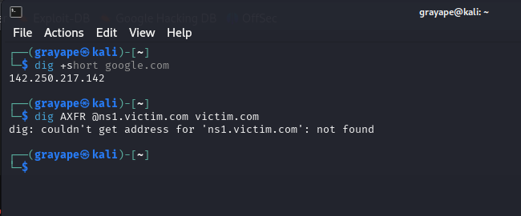

1.2_network_services_&_protocols.net
Ports, protocols, and application services coordinate the conversations that ride upon the network’s physical and virtual highways.
1 Addressing & Name Services
1.1 DHCP – Dynamic Host Configuration Protocol
Dynamic Host Configuration Protocol (DHCP) automatically assigns IP addressing details (subnet mask, default‑gateway, DNS, NTP, option‑43 for VoIP, etc.) to hosts, simplifying moves/adds/changes.
1.1.1 Lease Process (DORA + Timers)
| Stage | Broadcast? | Description |
|---|---|---|
| Discover | Yes | Client (0.0.0.0 → 255.255.255.255) announces it needs config. |
| Offer | Yes | Server advertises free lease (includes yiaddr, lease‑time). |
| Request | Yes | Client formally requests a specific offer / renews existing lease. |
| Ack | Yes | Server finalises; client configures interface and sends gratuitous ARP. |
Lease renewal
T1 = 50 % lease‑time – unicast REQUEST to original server.
T2 = 87.5 % – broadcast REQUEST if original server timed‑out.
After expiry, client returns to INIT state.
1.1.2 DHCPv6 Highlights
- Uses Solicit‑Advertise‑Request‑Reply (SARR) with multicast
ff02::1:2. - Prefix delegation, rapid‑commit, and stateless address autoconfiguration (SLAAC + RDNSS option 25).
1.1.3 High Availability
- Hot‑Standby – One active, one backup; VRRP on server VIP.
- Load‑Balance – Even/odd hash of client MACs; each peer owns half‑scope.
1.1.4 Security Concerns
- Rogue server → Mitigate with DHCP Snooping (switch feature).
- Exhaustion attack → Reduce lease‑time, implement rate‑limit.
1.2 DNS – Domain Name System
DNS converts memorable names to IPs and underpins load‑balancing (round‑robin), geo‑location (EDNS‑client‑subnet) and service discovery (SRV records).
1.2.1 Query Types & Flow
- Recursive – Resolver does all work and returns final answer to stub resolver.
- Iterative – Each referral returned to the client until authoritative answer reached.
1.2.2 Record Cheat‑Sheet
| Record | Purpose | Example |
|---|---|---|
| A / AAAA | IPv4 / IPv6 mapping | chat.openai.com → 104.18.12.123 |
| CNAME | Alias to another FQDN | www → @ |
| MX | Mail server preference | 10 mail1.example.net |
| NS | Delegates zone authority | ns1/ns2 |
| TXT | Arbitrary text – SPF/DMARC | v=spf1 include:_spf.google.com -all |
| SRV | Service + port discovery | _sip._tcp.example.com 0 5060 sip.example.com |
| CAA | Permitted certificate issuers | 0 issue "letsencrypt.org" |
1.2.3 DNSSEC in 60 Seconds
Adds authenticity & integrity via RRSIG signatures and a chain of trust (root → TLD → zone). Validating resolvers drop spoofed/poisoned answers.
1.2.4 TTL & Caching
Negative TTL (NXDOMAIN) • Flap‑protection via low TTL during migrations (300 s) • dig +trace to troubleshoot authoritative path.
1.3 NAT – Network Address Translation
Network Address Translation masks internal RFC‑1918 addresses behind public IPs.
| Mode | Mapping | Typical Use |
|---|---|---|
| Static | 1 private ↔ 1 public | DMZ servers requiring fixed IP |
| Dynamic | Many private ↔ many public (pool) | Enterprise outbound bursts |
| PAT (Overload) | Many private ↔ 1 public : port‑mux | Home routers |
1.3.1 NAT Variants & Behaviours
| Behaviour | Outbound Port Allocation | Inbound Acceptance |
|---|---|---|
| Full‑cone | Fixed port | Any external host ↔ that port |
| Restricted‑cone | Dynamic | Reply only to destination IP |
| Port‑restricted | Dynamic | Reply only to dest IP+port |
| Symmetric | Dynamic per flow | Only matching IP+port can return |
NAT traversal uses STUN, TURN, ICE (VoIP/WebRTC). Hairpin NAT enables internal hosts to reach a service on the router’s public IP.
2 Practical Service Enumeration
These CLI utilities help discover and interrogate live services. Image thumbnails remain so you can bundle screenshots or icons locally.
| Tool | Typical Use | One‑Liner Example |
|---|---|---|
| dig  | Inspect DNS records, query ANY/TXT, measure TTL | dig +nocmd example.com any +multiline |
dnsrecon  |
Automate zone transfers, brute‑force sub‑domains | dnsrecon -d example.com -t axfr |
curl  |
Fetch HTTP headers, test REST endpoints and status codes | curl -I https://api.example.com/v1/health |
wget  |
Mirror sites recursively for offline audit; pull large files | wget -r --no-parent http://legacyhost/ |
3 Network Access & Remote Services Network Access & Remote Services
3.1 VPN Protocols & Remote Access
| Protocol | OSI Lvl | Encryption | Notes |
|---|---|---|---|
| IPsec (IKEv2) | 3 | AES/GCM | Site‑to‑site & remote access; NAT‑T UDP 4500 |
| L2TP + IPsec | 2 | AES | Uses PPP inside UDP 1701; no data integrity sans IPsec |
| SSL/TLS VPN | 7 | AES/ChaCha | Runs over TCP 443; firewall‑friendly |
| WireGuard | 3 | ChaCha20‑Poly1305 | Minimal code, fast handshakes (UDP‑only) |
| GRE | 3 | None | Encapsulates any L3 protocol; add IPsec for security |
3.2 Authentication, Authorisation, Accounting
- RADIUS – UDP 1812/1813; combines AAA; password obfuscated with shared secret.
- TACACS+ – TCP 49; separates AAA; encrypts full payload; command‑level authorisation (network devices).
For Wi‑Fi Enterprise, 802.1X EAP‑TLS rides on RADIUS for credentials.
4 Routing Fundamentals
4.1 Key Routing Concepts
- Administrative Distance (AD) – Trust ranking of sources (Connected 0, Static 1, EIGRP 90, OSPF 110, RIP 120).
- Route Redistribution – Injecting routes between protocols; beware loops, set seed metrics.
- Summarisation / Aggregation – Reduces table size; OSPF manual on ABR, BGP automatic if exact prefix aggregate exists.
- Split‑Horizon & Route Poisoning – Prevent counting‑to‑infinity in distance‑vector protocols.
- First Hop Redundancy – VRRP/HSRP/GLBP provide virtual default‑gateway IP; fail‑over sub‑second.
4.2 Dynamic Protocol Capsules
| Protocol | Metric | Convergence | Scale | Notes |
|---|---|---|---|---|
| RIP v2 | Hop count (≤ 15) | Slow | Small | Simple; supports CIDR & MD5 auth |
| OSPF v2/v3 | Cost (BW) | Fast | Large | SPF algorithm; areas (0 = backbone) |
| EIGRP | Composite (BW, delay) | Very fast | Med | Cisco proprietary (now IETF draft) |
| BGP‑4 | Policy/path (AS‑PATH, MED, LP) | Incremental | Internet‑scale | eBGP/iBGP, communities, route‑reflectors |
5 Unified Communication
5.1 VoIP Signalling vs Media
- SIP (TCP/UDP 5060, TLS 5061) sets up calls, negotiates codecs via SDP.
- RTP/RTCP (UDP dynamic ports) carry voice/video streams; packet‑loss concealed with jitter buffers.
5.1.1 QoS for UC
- Classify SIP control DSCP 24 (CS3) and RTP media DSCP 46 (EF); police < 150 ms one‑way delay, < 30 ms jitter, < 1 % loss.
5.2 UC Edge Elements
- Session Border Controller (SBC) – NAT‑traversal, topology‑hiding, DoS rate‑limit.
- VoIP Gateway – Transcodes TDM ↔ SIP; converts G.711 ↔ G.729/OPUS.
6 TLS & PKI Basics
Transport Layer Security (TLS) secures Layer‑7 protocols such as HTTPS, SMTPS, and FTPS by providing encryption, integrity, and authentication. Public‑Key Infrastructure (PKI) binds identities to keys via X.509 certificates.
6.1 TLS Handshake (TLS 1.3)
ClientHello → ServerHello
↓
[Encrypted Handshake]
Client Finished ↔ Server Finished
- ClientHello – Lists cipher‑suites, TLS version, SNI (Server Name Indication), ALPN (Application‑Layer Protocol Negotiation).
- ServerHello – Chooses cipher, sends certificate + key‑share.
- Encrypted handshake messages exchange session secrets using (EC)DHE.
- Both sides send Finished MAC; application data now flows with AEAD (AES‑GCM/ChaCha20‑Poly1305).
TLS 1.3 removed RSA key exchange & static DH, reducing handshake RTT from two to one.
6.2 Version Timeline
| Era | Protocol | Key Points |
|---|---|---|
| 1995 | SSL v2 | Weak, deprecated |
| 1996 | SSL v3 | Pre‑TLS; CBC, MAC‑then‑Encrypt |
| 1999 | TLS 1.0 | RFC 2246; RC4/CBC suites |
| 2006 | TLS 1.1 | Adds explicit IV to CBC |
| 2008 | TLS 1.2 | SHA‑256 PRF, AEAD (GCM) |
| 2018 | TLS 1.3 | 0‑RTT, forward secrecy mandatory |
6.3 Certificate Anatomy
- Subject CN/SAN – FQDN(s) covered.
- Issuer – CA that signed the cert.
- Validity –
Not Before / Not After; expired certs trigger warnings. - Public Key – RSA/ECDSA.
- Extensions – Key Usage, Extended Key Usage, OCSP Must‑Staple.
Inspecting Certificates
openssl s_client -connect site:443 -servername site -alpn h2
openssl x509 -noout -text -in cert.pem
6.4 Common Misconfigurations & Attacks
| Issue | Impact | Mitigation |
|---|---|---|
| Expired certificate | Breaks HTTPS; MITM possible if user ignores warning | Automated renewals (ACME/Let’s Encrypt) |
| Weak ciphers (3DES, RC4) | Vulnerable to SWEET32/RC4 biases | Disable legacy suites |
| Self‑signed in prod | Users can’t validate | Use public CA or corporate root pushed via GPO/MDM |
| Incorrect SNI | Certificate mismatch | Ensure reverse‑proxy passes Host header ↔ SNI |
| SSLStrip / Downgrade | Forces HTTP or TLS 1.0 | HSTS, X‑Frame‑Options, disable TLS < 1.2 |
Tip: Qualys SSL Labs provides an instant grade of any public HTTPS service.
7 Protocol Landscape Cheat‑Sheet
| Category | Protocols |
|---|---|
| Routing (IGP/EGP) | RIP • OSPF • EIGRP • IS‑IS • BGP |
| Secure Remote | SSH • TLS • IPsec • WireGuard |
| Mgmt/Telemetry | SNMPv3 • NetFlow/IPFIX • Syslog • gRPC‑GNMI |
| Name/Addressing | DNS • mDNS • DHCP • SLAAC |
| SMTP • IMAP • POP3 • DMARC/SPF/DKIM | |
| File Transfer | FTP • FTPS • SFTP • SCP • SMB • NFS |
| Web | HTTP/2 • HTTPS • QUIC/HTTP‑3 |
| IoT & Messaging | MQTT • AMQP • CoAP • WebSocket |